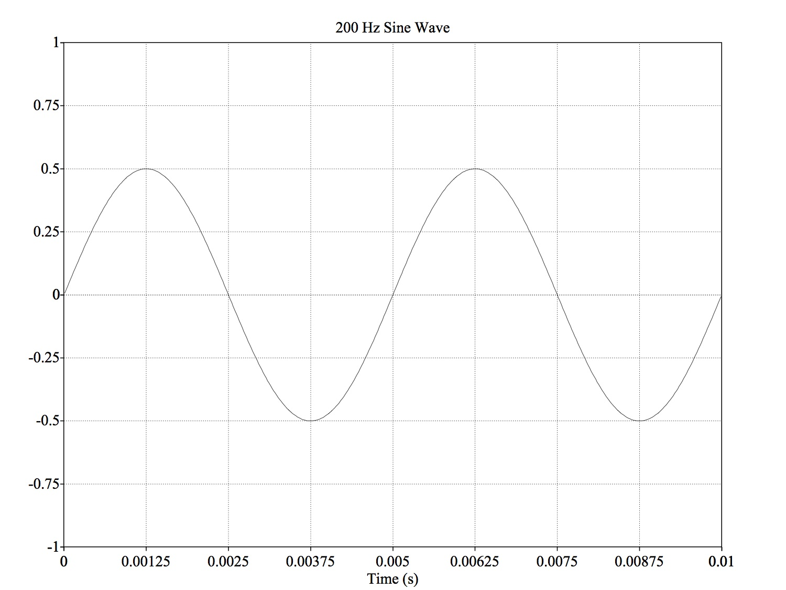
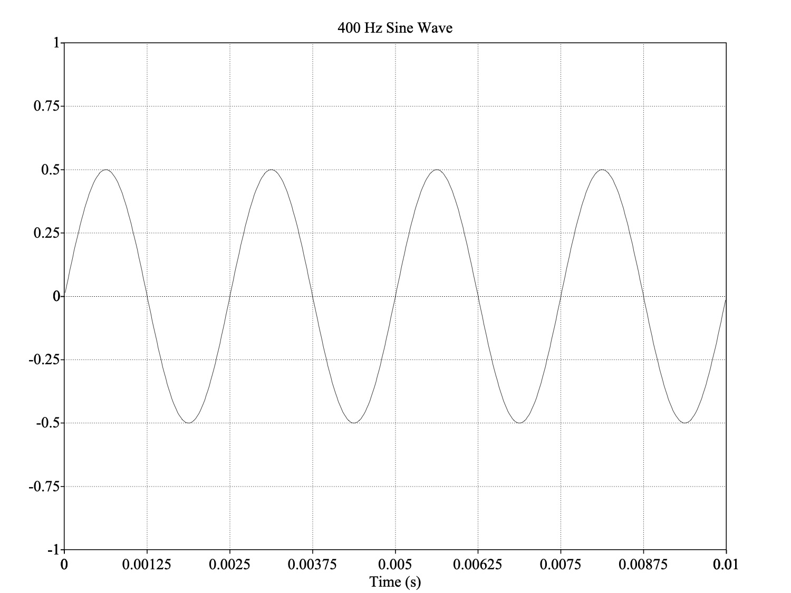
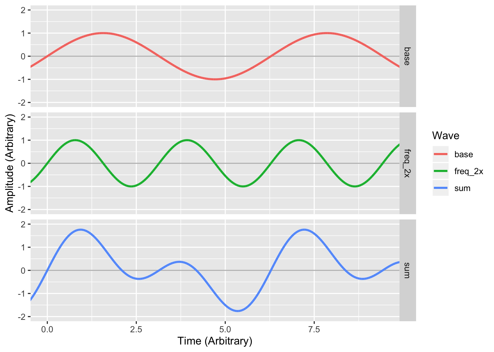
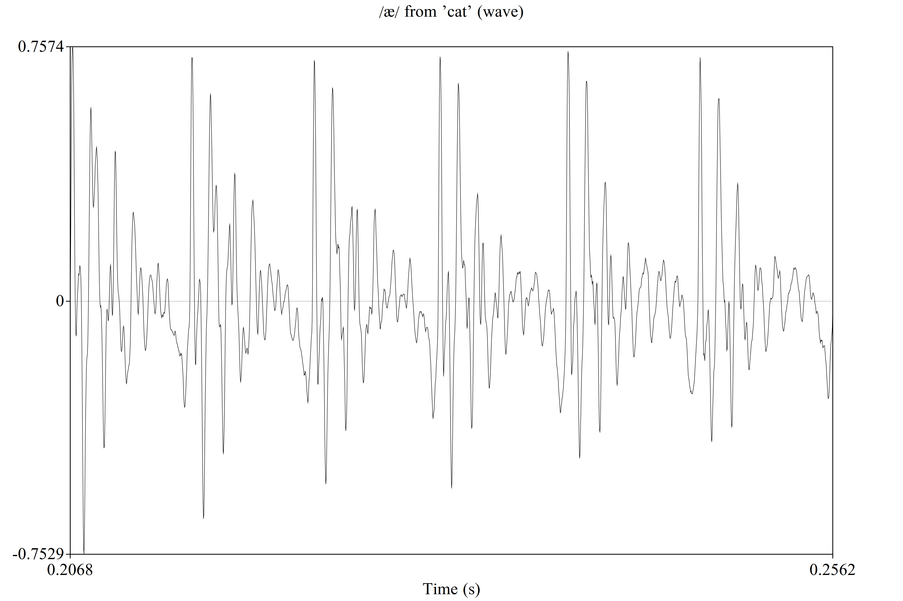
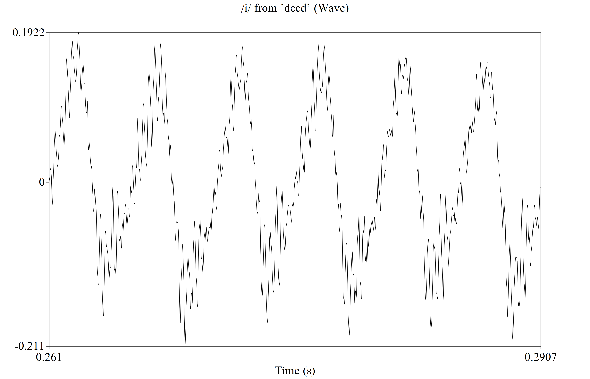
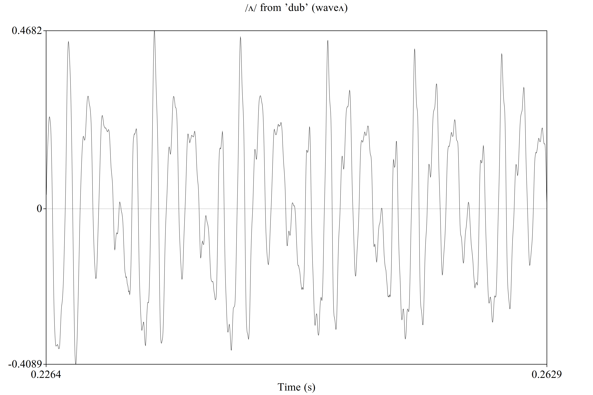
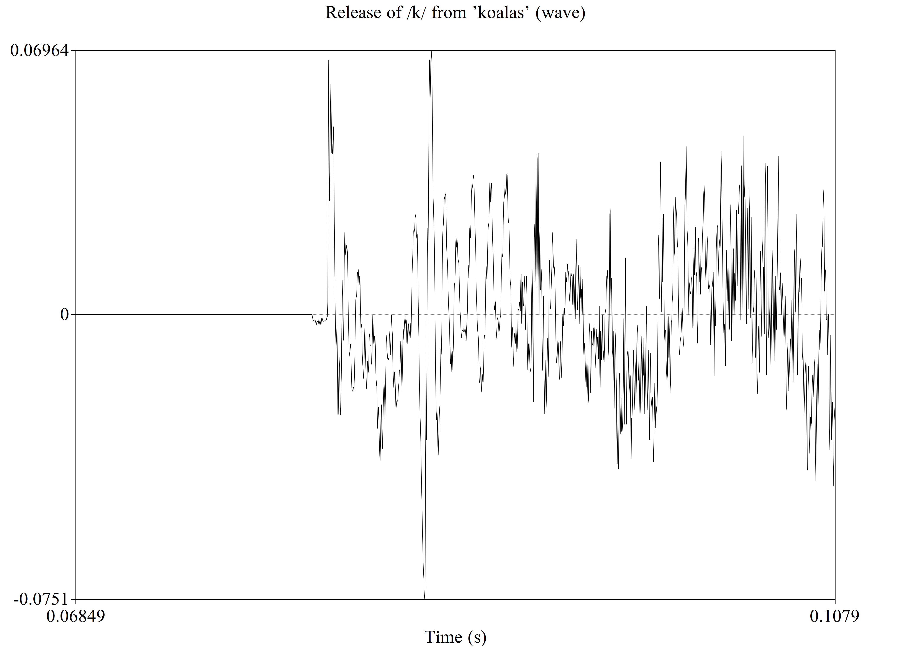

# Acoustics ### Will Styler - LIGN 168 --- ### Today's Plan - What is sound? - What are the properties of sound? - Complex Sounds --- ### Sound is compression and rarefaction in a medium <img class="r-stretch" src="phonmedia/sound_diagram.jpg"> --- ### ... but we need to talk about it more concretely! --- ### The Key Properties of Sound - Duration - How long does it last? - Amplitude - How powerful is it? - Frequency - How often does it cycle? - Period - How long does a single cycle take? --- ### Key Properties Continued - Wavelength - How far can the wave travel in a single cycle? - Phase - Where in the sound's 'cycle' does it start --- ### Duration - We talk about sounds in Milliseconds - 1 second (s) = 1000 milliseconds (ms) - Half a second (0.5 s) = 500 milliseconds (ms) - One Quarter second (0.25 s) = 250 ms - 1 meter = 1000 millimeters - Duration is one of the most robust cues in speech! - Differences in duration survive most anything ---  --- ### Amplitude - What is the difference in pressure between compressions and rarefactions? - This is related to perceived 'loudness' - Amplitude isn't interesting this quarter (we'll just assume 'enough') --- --- <img class="r-stretch" src="phonmedia/200HzHigherAmplitude.jpg"> --- ### Conceptualizing Amplitude - Why is dropping a small book quieter than dropping a large one? - Why can high amplitude sound be damaging and shatter windows? --- ### Period - How long does a single cycle last? --- --- - Here, 0.005 seconds (5 ms) <audio controls src="phonmedia/200Hz.wav"></audio> ---  --- - Here, 0.0025 seconds (2.5ms) <audio controls src="phonmedia/400Hz.wav"></audio> --- ### Frequency - "How many times does the sound cycle in one second?" - Measured in 'Hertz' (Hz), also known as 'Cycles per second' - 'How many periods can fit in one second?' --- # f = 1/t - f = Frequency in Hz - t = Period in Seconds --- --- - Period = 0.005 seconds - Frequency = 1/0.005 = **200 Hz** --- - Period = 0.0025 seconds - Frequency = 1/0.0025 = **400 Hz** --- ### Greater period = Lower Frequency! - Longer cycles == Fewer Cycles per Second --- ### Frequency is related to pitch and wavelength - Pitch is the perceptual correlate of frequency - Generally, when frequency goes up, so does perceived pitch - Lower frequency waves travel farther per cycle - They have longer 'wavelength' - Wavelength isn't very interesting for LIGN 168 --- ### We can find these things out for any sound! <img class="r-stretch" src="phonmedia/100+200.jpg"> --- <img class="r-stretch" src="phonmedia/100+200.jpg"> - Amplitude ≈ 0.9 - Duration = ?? - Period = 0.01 seconds - Frequency = 1/0.01 = 100 Hz - Wavelength = 343/100 = 3.43 meters --- ### How do we create complex sounds? - By making multiple sounds at the same time! - Or, mathematically, using addition! --- <img class="r-stretch" src="phonmedia/soundw.jpg"> <audio controls src="phonmedia/soundw.wav"></audio> --- <img class="r-stretch" src="phonmedia/soundt.jpg"> <audio controls src="phonmedia/soundt.wav"></audio> --- <img class="r-stretch" src="phonmedia/soundf.jpg"> <audio controls src="phonmedia/soundf.wav"></audio> --- <img class="r-stretch" src="phonmedia/soundwtf.jpg"> <audio controls src="phonmedia/soundwtf.wav"></audio> --- ### Let's look at this process in a bit more detail!  --- <img class="r-stretch" src="diagrams/phase_3x_90_separate.jpg"> --- ### You can add very different frequencies! <img class="r-stretch" src="diagrams/phase_12x_separate.jpg"> --- ### Why would sounds be combined together using addition? <img class="r-stretch" src="diagrams/phase_12x_separate.jpg"> --- ### The sum of two waves is the sum of their pressures at any given point - Which gives rise to... --- ## Interference --- ### Interference - Multiple signals are 'interfering' with one another when they collide and affect one another - *Affect* means just that! Any effect at all! - There are two main kinds of interference in audio - Constructive Interference - Destructive Interference --- ### Constructive Interference - When multiple waves combine in such a way that they become **stronger** - When peaks add together with peaks --- ### Destructive Interference - When multiple waves combine in such a way that they become **weaker** - When peaks add together with valleys --- ### Constructive Interference <img class="r-stretch" src="diagrams/phase_ampbase_separate.jpg"> --- ### Destructive Interference <img class="r-stretch" src="diagrams/phase_combined_separate.jpg"> --- ### ... but wait - Those sounds had the same frequency - The same amplitude - ... and the same duration - One pair combined constructively, and the other pair destructively - ### What's the difference? --- ## Phase --- ### Phase - The point of the cycle in which a sound 'starts' - The 'orientation' of the wave in time - We measure phase in Degrees (°) - 0° is the base, and is the same as 360° - 180° is the exact opposite phase from 0° --- <img class="r-stretch" src="diagrams/phase_phases_separate.jpg"> --- ### Phase is important for adding sounds together! - Sounds that are 'in phase' experience constructive interference - Sounds that are 'out of phase' experience destructive interference - Also called 'phase cancellation' here --- ### Constructive Interference <img class="r-stretch" src="diagrams/phase_ampbase_separate.jpg"> --- ### Destructive Interference/Phase Cancellation <img class="r-stretch" src="diagrams/phase_combined_separate.jpg"> --- ### Complete cancellation is relatively rare! <img class="r-stretch" src="diagrams/phase_amplified_separate.jpg"> --- ### Phase effects aren't all-or-nothing <img class="r-stretch" src="diagrams/phase_offbad_separate.jpg"> --- <img class="r-stretch" src="diagrams/phase_off_separate.jpg"> --- ### Aside: Applied Phase Cancellation <img class="r-stretch" src="img/noise_cancelling_headphones.jpg"> --- <img class="r-stretch" src="hearing/muffler.jpg"> --- ### Humans can't detect phase - It doesn't matter what phase a sound starts on to us - But it's crucial when making complex sounds! --- ### Subtle Phase differences matter! --- <img class="r-stretch" src="diagrams/phase_3x_90_separate.jpg"> --- <img class="r-stretch" src="diagrams/phase_3x_separate.jpg"> --- ## Speech Signals are wildly complicated --- ### Speech has one 'fundamental frequency' - This comes from your larynx - The 'Pitch' of your voice, called 'f0' or the Fundamental Frequency - Then it has many 'harmonics' which are waves which are multiples of f0 --- ### We then 'filter' that through our vocal tract - The Fundamental and harmonics pass through your vocal tract and the resonances are shaped by tongue shape and more - What you do with your larynx is **independent** of what happens to that signal in the rest of the vocal tract - We talk about the 'Source-Filter Model' to capture this --- ### Even a steady vowel is complex  --- ### Even a steady vowel is complex  --- ### Even a steady vowel is complex  --- ### So is a nasal <img class='r-stretch' src='phonmedia/waveform_n.png'> --- ### Other speech sounds make their own, aperiodic noise - Fricatives produce separate noise by creating turbulence in air - Stops and Ejectives produce 'bursts' of noise on release - Clicks release vacuum to produce sound --- ### Aperiodic Sounds - Do not have a fundamental frequency - Measuring the period/frequency/wavelength isn't helpful or meaningful - They are best modeled with gaussian noise rather than tones - They will need to be processed and treated differently than periodic sounds --- ### Frication Noise is aperiodic <img class='r-stretch' src='phonmedia/waveform_s.png'> --- ### So are stop releases  --- ### All this adds up to very complex waves <img class='r-stretch' src='phonmedia/sky.png'> --- ### All this adds up to very complex waves <img class='r-stretch' src='phonmedia/noisewaveform.png'> --- ### ... So how do we capture these complex waves with a computer which understands only 0 and 1? - *Next time!* --- ### Wrapping Up - All sounds have amplitude, duration, periods, frequencies, wavelengths, and phases - Many of these things are related to one another - These properties have real consequences for how sound actually works! --- <huge>Thank you!</huge>